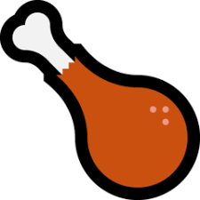
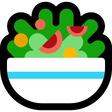
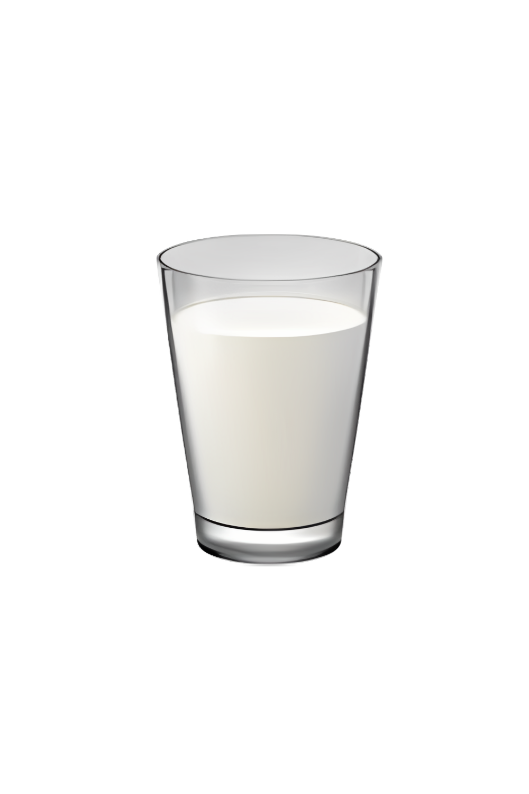

Makanan adalah salah satu kebutuhan pokok dalam hidup. Maka dari itu, menu makanan sehat harus diterapkan dalam kehidupan kita sehari-hari. Namun, di era kita ini, mulai banyak orang yang tidak mempedulikan gizi yang terkandung pada makanan yang mereka konsumsi. Orang-orang seringkali membeli makanan cepat saji yang lebih mudah dan relatif murah, tetapi tidak memiliki gizi seimbang yang kita butuhkan.
Persatuan Ahli Gizi Indonesia (PERSAGI) menyoroti masih tingginya konsumsi makanan ultra-processed food (UPF), terutama di kalangan anak-anak dan remaja. Dalam peringatan Hari Gizi Nasional, PERSAGI mengingatkan kebiasaan mengonsumsi makanan dan minuman berpemanis serta makanan kemasan berisiko memicu berbagai penyakit kronis di kemudian hari.
Edukator gizi PERSAGI, Ni Ketut Aryas Tami mengimbau masyarakat untuk membatasi konsumsi makanan UPF dan tinggi gula garam lemak (GGL).
Untuk mewujudkan hal tersebut, berikut salah satu rekomendasi menu makan sehat bergizi seimbang:
Kesimpulan
Pola makan sehat itu penting karena makanan memberi energi dan zat gizi yang tubuh butuhkan. Jadi kita harus mengurangi makanan cepat saji dan minuman manis yang banyak mengandung gula, garam, dan lemak seperti yang diingatkan PERSAGI. Lebih baik memilih menu seimbang seperti nasi putih untuk karbohidrat, ayam fillet atau tahu untuk protein, sayur orak-arik untuk serat dan vitamin, serta buah seperti nanas dan anggur untuk membantu pencernaan dan memberi antioksidan. Sehingga kalau kita makan teratur dan bergizi kemungkinan sakit berkurang dan tubuh bisa tumbuh dan beraktivitas dengan baik.
Kunci hidup sehat dimulai dari piring Anda. Kombinasi tepat antara Karbohidrat, Protein, Vitamin, dan Mineral untuk tubuh yang optimal.
9B
Arahkan kursor ke nama anggota di sebelah kiri untuk melihat detail tugas masing-masing.
Makanan adalah salah satu kebutuhan pokok dalam hidup. Namun, di era kita ini, mulai banyak orang yang tidak mempedulikan gizi. Orang-orang seringkali membeli makanan cepat saji yang lebih mudah dan relatif murah, tetapi tidak memiliki gizi seimbang.

| 🥕 Wortel | Vitamin A |
| 🥚 Telur | Protein |
| 🥬 Buncis | Serat |
| 🌽 Jagung | Karbohidrat |
| 🌶 Cabai | Vitamin C |

Mengandung Enzim Bromelain
Membantu proses pencernaan.
Kaya Antioksidan Resveratrol
Mencegah penuaan dini.

Kesimpulannya, pola makan sehat itu penting karena makanan memberi energi dan zat gizi yang tubuh butuhkan. Jadi kita harus mengurangi makanan cepat saji dan minuman manis yang banyak mengandung gula, garam, dan lemak seperti yang diingatkan PERSAGI.
Lebih baik memilih menu seimbang seperti nasi putih untuk karbohidrat, ayam fillet atau tahu untuk protein, sayur orak-arik untuk serat dan vitamin, serta buah seperti nanas dan anggur untuk membantu pencernaan dan memberi antioksidan. Sehingga kalau kita makan teratur dan bergizi kemungkinan sakit berkurang dan tubuh bisa tumbuh dan beraktivitas dengan baik.
"You are what you eat."
Presentasi Makanan Sehat Bergizi Seimbang - Kelompok 6